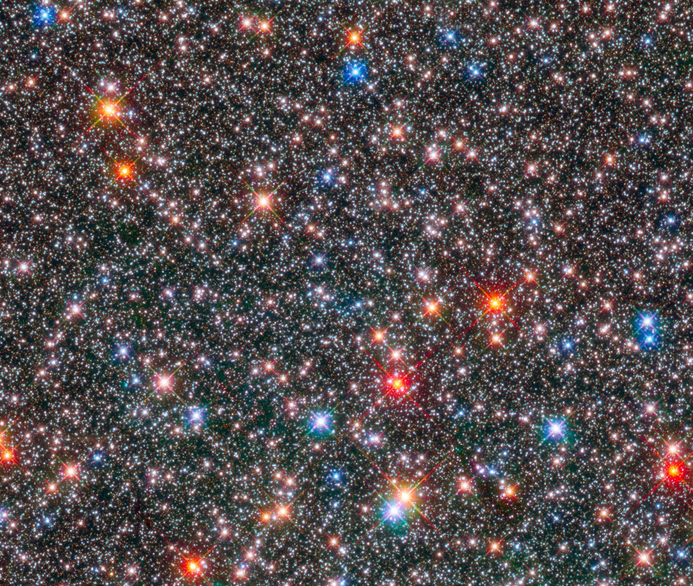

Metal-rich stars are stars whose atmospheres contain a higher-than-solar proportion of elements heavier than hydrogen and helium. In astronomy, all elements beyond helium — including oxygen, carbon, and iron — are collectively termed 'metals', regardless of their chemical nature. A star is considered metal-rich when its iron-to-hydrogen ratio exceeds that of the Sun, quantified on the logarithmic [Fe/H] scale as [Fe/H] > 0.0.

NASA, ESA, T. Brown (STScI), W. Clarkson (University of Michigan-Dearborn), A. Calamida and K. Sahu (STScI)
The [Fe/H] scale is logarithmic: each step of +1 dex corresponds to a ten-fold increase in iron abundance relative to the Sun. The Sun itself is defined as [Fe/H] = 0.0 and is a Population I star, already relatively metal-rich by cosmic standards. Stars with [Fe/H] > +0.15 to +0.2 are termed super-metal-rich (SMR). The Hyades open cluster, the nearest open cluster to the Sun at roughly 150 light-years, has [Fe/H] = +0.14 and serves as a canonical benchmark for mildly metal-rich stellar populations.
Metal-richness reflects the chemical history of the galaxy. The first stars formed from primordial hydrogen and helium and were essentially metal-free. Each successive generation of stars synthesises heavier elements through stellar nucleosynthesis, and supernovae and planetary nebulae return this enriched material to the interstellar medium. Younger stellar populations are therefore progressively more metal-rich, though location in the galaxy also strongly influences metallicity: thin disk stars span [Fe/H] from −0.5 to +0.3, while the Galactic bulge hosts the most metal-rich population known, with [Fe/H] ranging from −1.0 to +1.0 and some 35–41% of bulge stars exceeding solar metallicity within the inner 1.2 kpc of the Galactic centre.
Physically, metals increase the opacity of a stellar atmosphere and interior, causing metal-rich red giants to expand and cool further than their metal-poor counterparts. Metal-rich atmospheres also absorb blue light preferentially through line blanketing, making these stars appear slightly redder than metal-poor stars of the same temperature. On the Hertzsprung–Russell diagram, metal-rich populations display main-sequence turnoff points at lower effective temperatures for a given age, and redder, cooler giant branches.
A well-established correlation exists between stellar metallicity and giant planet formation: the higher the [Fe/H], the more likely a star is to host a Jupiter-mass planet. This is explained by the core-accretion model, in which a metal-rich protoplanetary disk provides more solid material for planetary cores to grow rapidly before the disk dissipates. Notable metal-rich stars include Mu Leonis (μ Leo), a K giant with [Fe/H] ≈ +0.45, and the Galactic bulge giant BW IV-167 at [Fe/H] = +0.44 — among the most metal-rich stars known.
See also: metals, abundance ratio, population I, population II, stellar evolution, Hertzsprung–Russell diagram, chemical evolution, thin disk, thick disk.